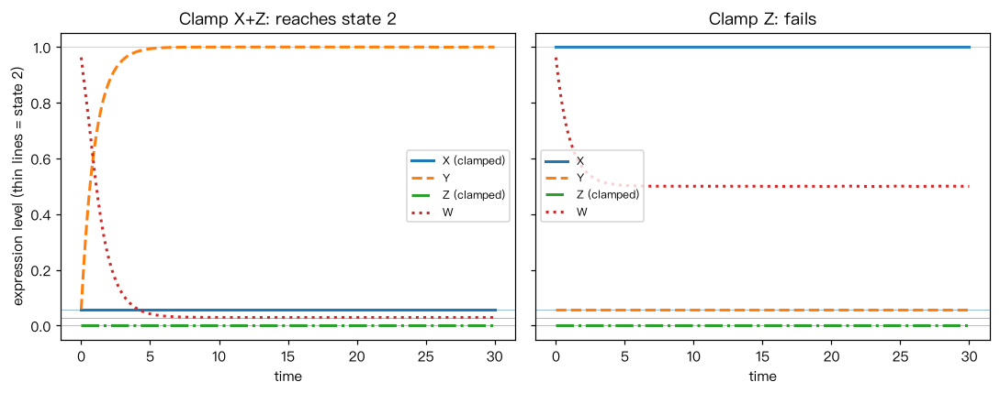

Example10 / 12
反馈顶点集控制——锁定少数节点把非线性网络推向指定吸引子
四基因网络：X 与 Y 互相抑制（双稳态开关），X 激活 Z，Y 抑制 W，Z 与 W 互相激活形成第二个环。 反馈顶点集（FVS）是删去后网络无环的节点集合；Fiedler 与 Mochizuki 等（2013）证明：在温和条件下， 把 FVS 节点的轨迹锁定为目标吸引子上的值，其余节点会收敛到该吸引子（Zañudo 等 2017 在此基础上加入源节点）。 本例先求两个稳态，再从稳态 1 出发锁定最小 FVS，检查其余节点是否收敛到稳态 2。 解读：锁定 FVS（2 个节点）即可在不依赖具体参数的意义上完成状态切换；只锁定 Z（不是 FVS）失败。 在这组具体参数下只锁定 X 也成功——FVS 是“对所有满足条件的非线性函数都有效”的充分集合，具体模型可能需要更少。
Output输出图

Output文字输出
稳态 1: [1. 0.059 0.937 0.962] 稳态 2: [0.059 1. 0. 0.029] 最小反馈顶点集: ['X', 'Z'] 锁定 ['X', 'Z'] -> 终态 [0.059 1. 0. 0.029]，与稳态 2 的距离 0.000 锁定 ['Z'] -> 终态 [1. 0.059 0. 0.5 ]，与稳态 2 的距离 1.411 锁定 ['X'] -> 终态 [0.059 1. 0. 0.029]，与稳态 2 的距离 0.000
Code代码
# 四基因网络：X 与 Y 互相抑制（双稳态开关），X 激活 Z，Y 抑制 W，Z 与 W 互相激活形成第二个环。
# 反馈顶点集（FVS）是删去后网络无环的节点集合；Fiedler 与 Mochizuki 等（2013）证明：在温和条件下，
# 把 FVS 节点的轨迹锁定为目标吸引子上的值，其余节点会收敛到该吸引子（Zañudo 等 2017 在此基础上加入源节点）。
# 本例先求两个稳态，再从稳态 1 出发锁定最小 FVS，检查其余节点是否收敛到稳态 2。
# 解读：锁定 FVS（2 个节点）即可在不依赖具体参数的意义上完成状态切换；只锁定 Z（不是 FVS）失败。
# 在这组具体参数下只锁定 X 也成功——FVS 是“对所有满足条件的非线性函数都有效”的充分集合，具体模型可能需要更少。
import itertools
import numpy as np
import networkx as nx
from scipy.integrate import solve_ivp
edges = {("X", "Y"): -1, ("Y", "X"): -1, ("X", "Z"): +1, ("Y", "W"): -1, ("Z", "W"): +1, ("W", "Z"): +1}
nodes = ["X", "Y", "Z", "W"]
G = nx.DiGraph(list(edges))
hill = lambda x, s: x**4 / (0.5**4 + x**4) if s > 0 else 0.5**4 / (0.5**4 + x**4)
def rhs(t, x, clamp):
d = dict(zip(nodes, x)); out = []
for v in nodes:
if v in clamp:
out.append(0.0); continue
regs = [hill(d[u], s) for (u, w), s in edges.items() if w == v]
out.append(np.mean(regs) - d[v])
return out
def run(x0, clamp=()):
return solve_ivp(rhs, (0, 60), x0, args=(set(clamp),), rtol=1e-8).y[:, -1]
s1 = run([1.0, 0.0, 1.0, 1.0]); s2 = run([0.0, 1.0, 0.0, 0.0])
print("稳态 1:", np.round(s1, 3), " 稳态 2:", np.round(s2, 3))
def is_fvs(S):
H = G.copy(); H.remove_nodes_from(S)
return nx.is_directed_acyclic_graph(H)
fvs = next(set(S) for k in range(1, 5) for S in itertools.combinations(nodes, k) if is_fvs(S))
print("最小反馈顶点集:", sorted(fvs))
for S in [sorted(fvs), ["Z"], ["X"]]:
x0 = s1.copy()
for v in S:
x0[nodes.index(v)] = s2[nodes.index(v)] # 把锁定节点设为目标吸引子上的值并保持不变
xf = run(x0, clamp=S)
print("锁定 %-10s -> 终态 %s，与稳态 2 的距离 %.3f" % (S, np.round(xf, 3), np.linalg.norm(xf - s2)))
import matplotlib.pyplot as plt
fig, axes = plt.subplots(1, 2, figsize=(10, 4), sharey=True)
for ax, S in zip(axes, [sorted(fvs), ["Z"]]):
x0 = s1.copy()
for v in S:
x0[nodes.index(v)] = s2[nodes.index(v)]
sol = solve_ivp(rhs, (0, 30), x0, args=(set(S),), t_eval=np.linspace(0, 30, 300))
for i, (v, ls) in enumerate(zip(nodes, ["-", "--", "-.", ":"])):
l, = ax.plot(sol.t, sol.y[i], ls=ls, lw=2, label=v + (" (clamped)" if v in S else ""))
ax.axhline(s2[i], c=l.get_color(), lw=0.6, alpha=0.5)
ax.set_xlabel("time"); ax.set_title("Clamp %s: %s" % ("+".join(S), "reaches state 2" if np.linalg.norm(sol.y[:, -1] - s2) < 0.05 else "fails"))
ax.legend(fontsize=8)
axes[0].set_ylabel("expression level (thin lines = state 2)")
plt.tight_layout(); plt.show()Run在浏览器中运行
首次加载 Python 环境约需 20–40 秒；可以修改参数后重新运行。